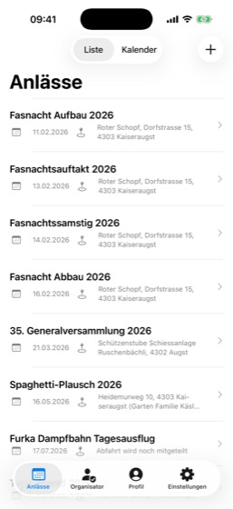
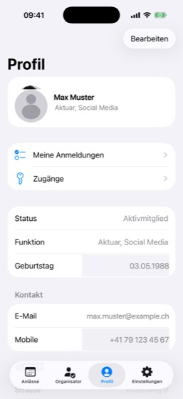
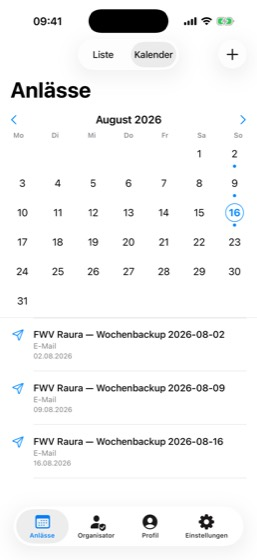
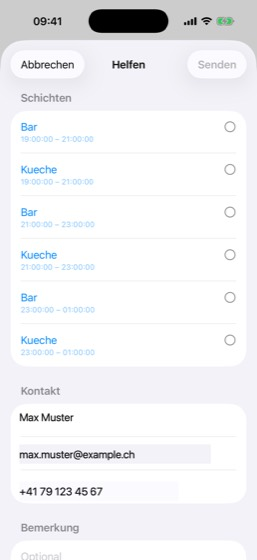
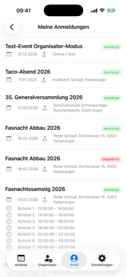
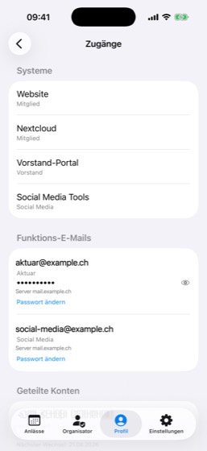
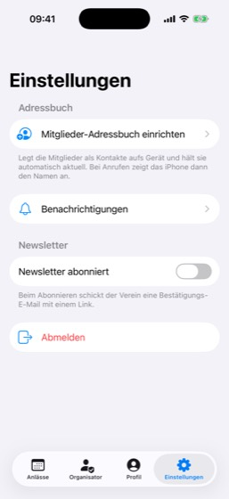
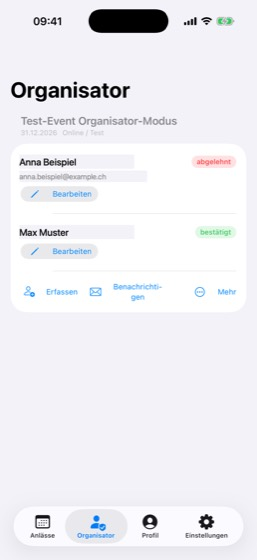

App aufs Telefon holen
Android: Auf fwv-raura.ch/apps.html liegt die Datei zum Herunterladen. Android fragt beim Öffnen, ob es Apps aus dieser Quelle installieren darf — das musst du einmal erlauben, danach läuft es wie bei jeder anderen App.
iPhone: Die iOS-Fassung ist fertig, aber noch nicht im App Store. Sobald die Verteilung über TestFlight steht, kommt sie auf dieselbe Seite.

Anmelden
Es gibt drei Wege hinein. Der erste ist der übliche.
Mit dem Vereins-Login
- In der App auf Anmelden tippen.
- Das Telefon fragt, ob die App die Vereins-Anmeldung verwenden darf — Fortfahren.
- Im Browserfenster mit deinem Vereins-Konto anmelden und die Berechtigungen bestätigen.
- Fertig. Die App merkt sich die Anmeldung; beim nächsten Start bist du direkt drin.
Mit QR-Code
Hast du kein Vereins-Konto, aber einen gedruckten QR-Code bekommen: Mit QR-Code anmelden antippen und den Code vor die Kamera halten. Beim ersten Mal fragt das Telefon nach der Kamera-Erlaubnis.
Passwort vergessen
Wenn du beim Anmelden nicht weiterkommst, weil das Passwort fehlt: siehe den nächsten Abschnitt. Das Vereins-Login lässt sich selbst zurücksetzen.

Passwort vergessen
Das Vereins-Login gilt für die App und für die Website. Es lässt sich selbst zurücksetzen, ohne dass jemand aus dem Vorstand etwas tun muss.
- Auf der Anmeldeseite unten auf Benutzername oder Passwort vergessen? tippen.
- Die E-Mail-Adresse eingeben, die der Verein von dir hat, und Continue drücken.
- In den Posteingang schauen. Der Link darin führt auf eine Seite, auf der du ein neues Passwort setzt.
- Mit dem neuen Passwort anmelden — in der App wie auf der Website.
Den Weg gibt es auch direkt:
auth.fwv-raura.ch/if/flow/password-recovery/

Anlässe ansehen
Der erste Tab zeigt alle Anlässe des Vereins. Oben schaltest du zwischen Liste und Kalender um.
Die Liste zeigt Titel, Datum und Ort untereinander — gut, um zu sehen, was als Nächstes ansteht. Der Kalender zeigt den Monat mit farbigen Punkten an den Tagen: jede Farbe steht für eine Art von Eintrag, von Anlässen über Vorstandssitzungen bis zu fälligen Beiträgen. Tippst du einen Tag an, erscheinen darunter nur dessen Einträge.
Ein Tipp auf einen Anlass öffnet die Einzelheiten: Datum, Ort, Kosten, Organisator, Beschreibung — und die Schichten, falls es welche gibt.

Mithelfen oder teilnehmen
Unten auf der Anlass-Seite steht ein Knopf. Wie er heisst, hängt vom Anlass ab:
- Helfen — der Anlass hat Schichten. Du wählst eine oder mehrere aus.
- Anmelden — es geht um deine Teilnahme. Du gibst an, mit wie vielen Personen du kommst, und kannst Allergien vermerken.
Name, E-Mail und Telefon sind aus deinem Profil vorausgefüllt. Du kannst sie ändern, etwa wenn du jemanden mit anmeldest.

Meine Anmeldungen
Im Profil unter Meine Anmeldungen siehst du alles, wozu du dich eingetragen hast — mit Datum, Ort und den Schichten, die dir zugeteilt sind.
Der farbige Vermerk rechts sagt, wie es um die Anmeldung steht:
- offen — der Organisator hat sie noch nicht angesehen
- bestätigt — du bist eingeteilt
- abgelehnt — meist, weil die Schicht schon voll war

Profil und Foto
Der Profil-Tab zeigt deine Angaben. Über Bearbeiten oben rechts änderst du Name, Kontakt und Adresse selbst — es braucht niemanden im Vorstand dafür.
Beim Profilfoto hast du die Wahl zwischen Mediathek und Kamera. Die App verkleinert das Bild vor dem Hochladen, du musst dich also nicht um die Dateigrösse kümmern. Entfernen geht ebenfalls, mit Rückfrage.
Status und Funktion lassen sich nicht selbst ändern — die pflegt der Vorstand.
Ganz unten steht Austritt beantragen. Der Antrag löscht nichts und beendet nichts: Er geht an den Vorstand, der darüber entscheidet.
Zugänge
Ebenfalls im Profil: Zugänge. Hier steht, auf welche Systeme du Zugriff hast — Website, Nextcloud, Vorstand-Portal und was sonst für deine Funktion freigeschaltet ist.
Hast du eine Funktions-E-Mail wie aktuar@fwv-raura.ch,
findest du hier die Zugangsdaten samt Serveradressen. Das
Passwort kannst du hier auch ändern — das ist die einzige
Stelle, an der das geht.

Mitglieder im Adressbuch
Unter Einstellungen → Mitglieder-Adressbuch einrichten verbindest du dein Telefon mit dem Vereins-Adressbuch. Danach stehen alle Mitglieder in deinen Kontakten, und bei einem Anruf siehst du den Namen statt einer unbekannten Nummer.
Der bequeme Weg ist das Profil zum Installieren; die App bietet es an. Wer lieber von Hand einrichtet, findet dort auch den Servernamen zum Kopieren und die Schritte einzeln aufgeführt.
Die Kontakte bleiben von allein aktuell — das Adressbuch wird nachts aufgefrischt. Voraussetzung ist ein Nextcloud-Konto.

Benachrichtigungen
Unter Einstellungen → Benachrichtigungen legst du fest, worüber du informiert wirst: Einladungen zu Anlässen, Erinnerungen an Schichten, Rückmeldungen zu deinen Anmeldungen und Vereinsmitteilungen.
Die Einstellungen gelten für E-Mail und für Meldungen aufs Telefon. Schaltest du etwas ab, bekommst du es auf keinem der beiden Wege.

Für Organisatoren
Organisierst du selbst einen Anlass, bekommst du einen zusätzlichen Tab. Der Verein erkennt das an der E-Mail-Adresse, die beim Anlass als Organisator hinterlegt ist — du musst nichts einschalten.
Dort siehst du deine Anlässe mit allen Anmeldungen und kannst:
- Anmeldungen genehmigen oder ablehnen
- jemanden von Hand erfassen, der telefonisch zugesagt hat
- alle Angemeldeten benachrichtigen
- eine andere Schicht vorschlagen, wenn eine voll und eine andere leer ist
- über Mehr: Anlass und Schichten bearbeiten, Notizen mit Fotos anlegen, Rezepte und Material verwalten, Teilnehmerliste und Aushang als PDF öffnen
Nach dem Benachrichtigen zeigt die App, wen die Nachricht nicht erreicht hat. Diese Liste lohnt einen Blick — wer keine Adresse hinterlegt hat, wurde übergangen.

Android und iPhone im Vergleich
Beide Apps können dasselbe. Zwei Punkte unterscheiden sich:
| Thema | Android | iPhone |
|---|---|---|
| Meldungen aufs Gerät | funktioniert | in Arbeit |
| Mitglieder im Adressbuch | gleicht laufend ab | über CardDAV-Konto |
Der Unterschied beim Adressbuch hat einen technischen Grund: Unter iOS darf keine App Kontakte bereitstellen. Dort richtet man das Adressbuch einmal als Konto ein — danach bleibt es genauso aktuell.